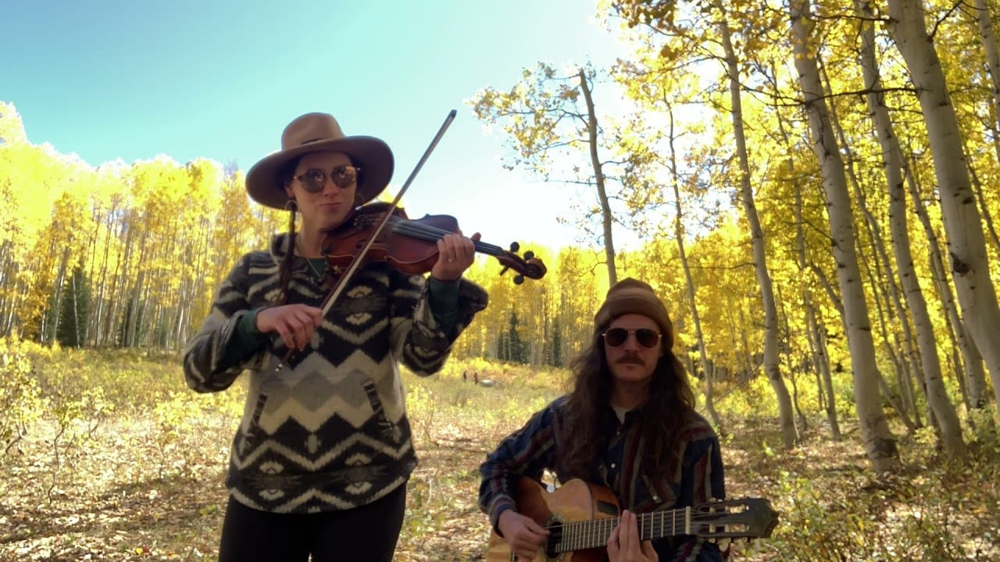

WEDDINGS
How to plan music for a Colorado destination wedding
The day has four parts, and one group of players can cover all of them. Here is what carries at an outdoor ceremony, how a band changes size from the aisle to the dance floor, and what changes when the wedding is up in the mountains.

You’re getting married in Colorado, and most of your guests are flying in. You’re choosing musicians from another state, for a venue you might have seen once, and the day has four parts that each need different music.
The four parts are the ceremony, the cocktail hour, dinner and dancing. One group of players can cover all four and change size as the day goes on. If the wedding is in the mountains, travel and lodging for the musicians are part of the plan.
What works for an outdoor ceremony? #
Many Colorado ceremonies are outside, and there aren’t any walls outdoors to send the sound back. So the instrument matters more than it would in a chapel.
A lot of the time, a single guitar or a single violin can’t carry the amount of sound a ceremony needs. The right guitarist can do it, and it’s an advanced skill. Strumming chords or picking out a melody won’t bring the beauty a professional brings to that moment. A keyboard carries more easily. More often we’d suggest at least a duo.
Roma Ransom is violin and guitar, and that pair is beautiful for a ceremony. A string duo, trio or quartet works too, and so does guitar with upright bass. We can bring a microphone for your officiant and run the vows through the same small sound system. There’s more on our ceremony music page.
Can one band play the whole day? #
Yes, and it’s how we like to do it. We form our bands in parts, so the same players can cover the ceremony, the cocktail hour, dinner and dancing.
Meghan Clarisse is a good example. She has a little twang, and she can play the procession on her own with a guitar. For the cocktail hour she adds a pedal steel player, and for dancing she brings her five-piece band.
Tejas Singh does the same thing with songs everyone knows. He starts as a duo for cocktails and dinner, adds drums, and finishes as a quartet when it’s time to dance.
For you, that means one group to plan with and one contract. For a wedding far from home, it also means fewer people to bring up the mountain.
What changes when the wedding is in the mountains? #
Travel and lodging for the musicians need to be included. Players love getting out of town to somewhere beautiful, and getting them and all their equipment there takes time and money.
We put that in your total when we reply with costs. We wrote about where to find it in how to read a band quote.
The preparation changes too. In town, if something goes wrong, there’s spare equipment and extra help close by. In the mountains there isn’t. So the players check everything before they leave, and they arrive prepared.
The altitude affects the instruments. Strings drift out of tune between an afternoon ceremony and the reception, so we allow a longer sound check up there. We have pages on weddings in Vail and weddings in Telluride, and on sound rules in the mountain towns.
What should it sound like? #
If you want the day to feel like Colorado, Meghan Clarisse is the flexible answer, and our Americana band plays the bluegrass and John Denver your guests are expecting. We wrote about what music Colorado is known for, city by city.
The mountain towns have the most appreciative crowds a band from the Front Range ever plays for. Your guests came a long way, and they’ll probably dance. We wrote about how to get people to dance at a wedding and what changes when the reception is outdoors.
| Part of the day | What it needs | Who we’d put on |
|---|---|---|
| Ceremony | Enough sound to carry outdoors: a duo, a keyboard, or the right guitarist | Roma Ransom, or a string duo |
| Cocktail hour | Music your guests can talk over | The same duo, or Meghan Clarisse with pedal steel |
| Dinner | Songs people know, played low | Tejas Singh as a duo or a trio |
| Dancing | A full band | Tejas Singh as a quartet, or Meghan Clarisse’s five-piece band |